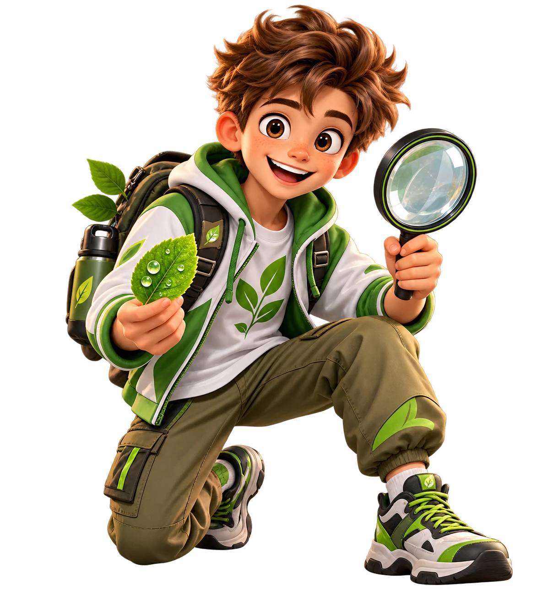
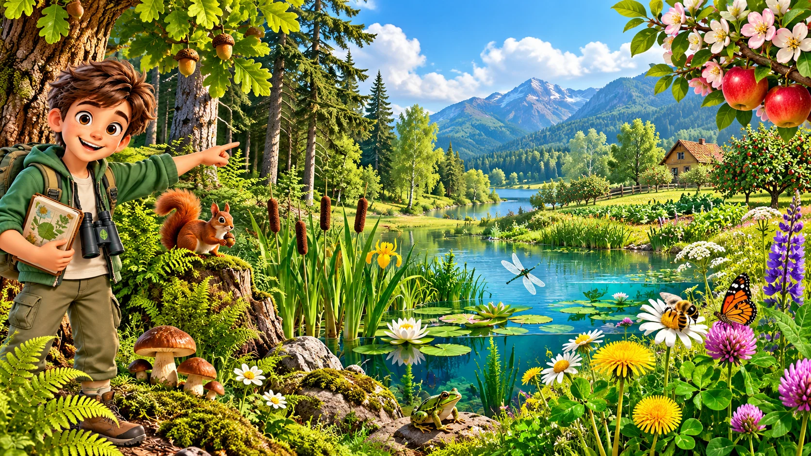
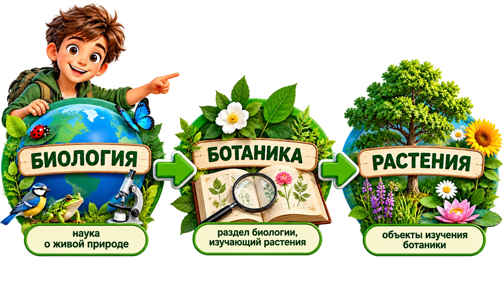
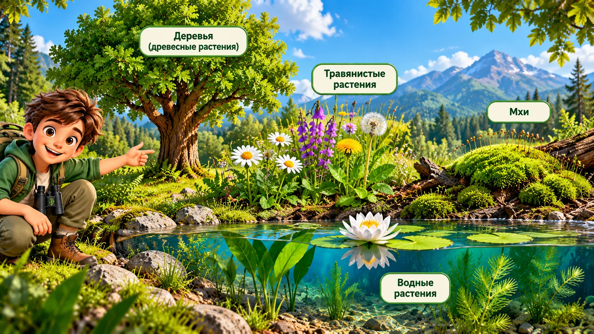
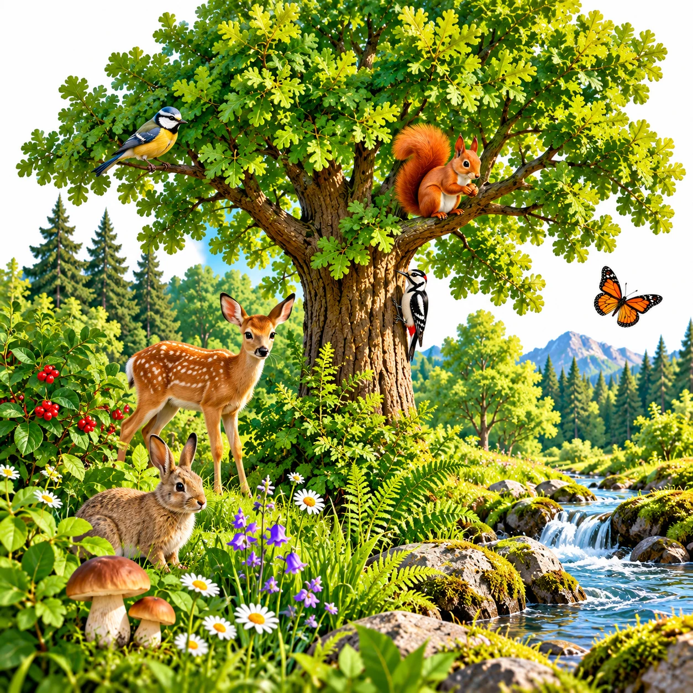
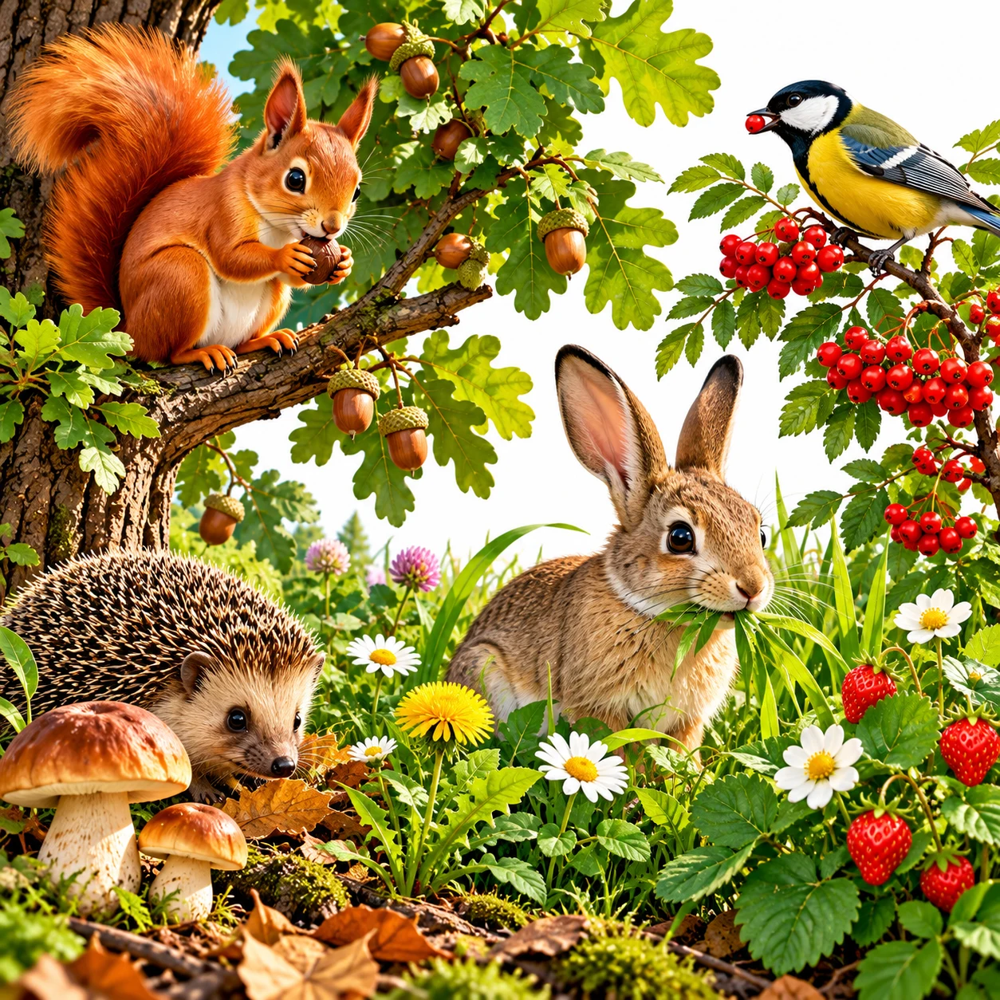
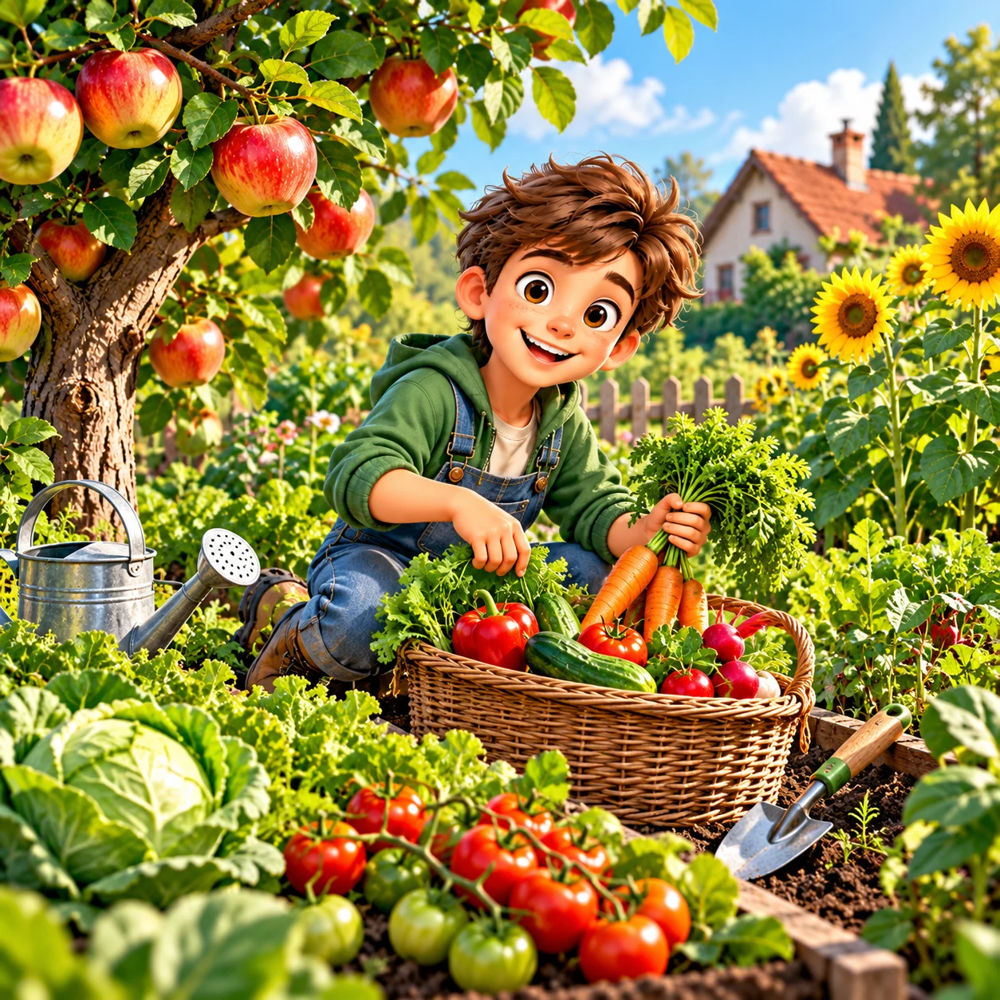
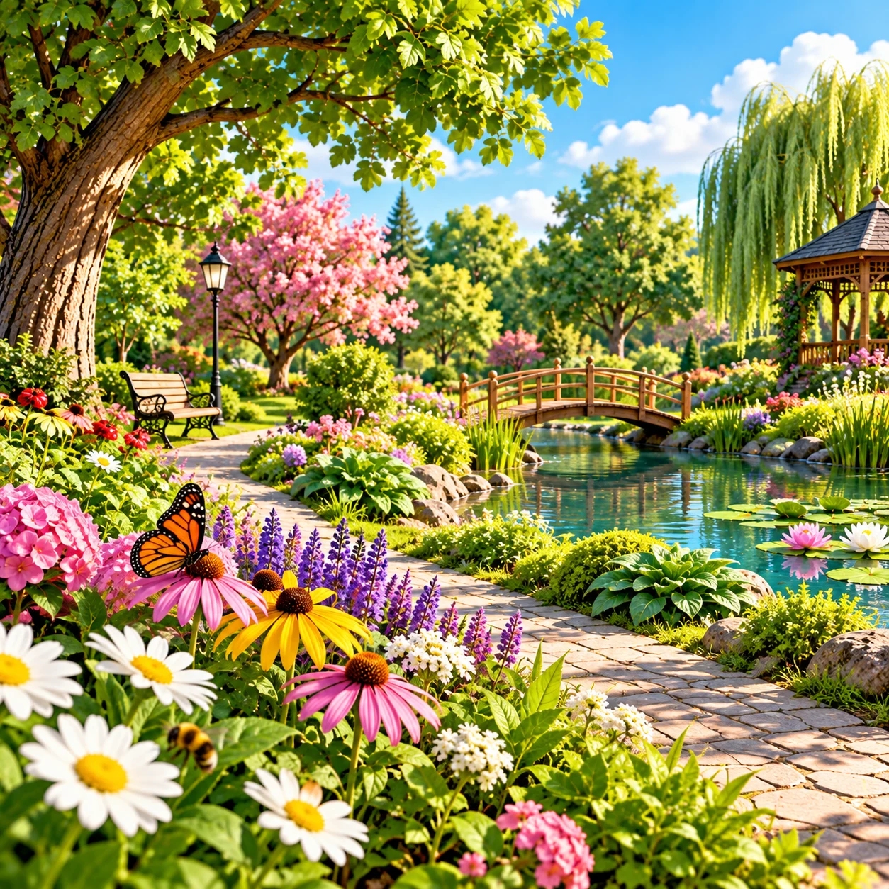
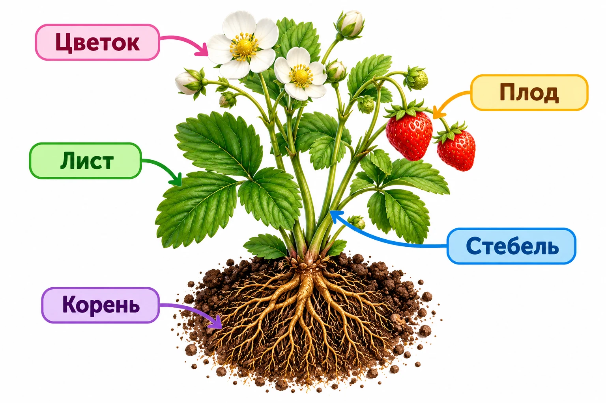

Ботаника — наука о растениях
Егор, сегодня мы открываем полевой дневник ботаника. Наша задача — выяснить, что изучает ботаника и почему растения так важны вокруг нас.
Разминка: найди объекты на картинке
Егор, перетащи каждую надпись прямо на соответствующий объект на общей картинке.
На телефоне можно перетащить карточку пальцем или нажать на надпись, а затем на нужный объект.

Что такое ботаника?

Ботаника — раздел биологии, изучающий растения. Растения — объекты исследования ботаники.
Кого будет изучать ботаник?
Мир растений очень разнообразен

Деревья, травянистые растения, мхи и водные растения могут сильно отличаться внешне. Пока не будем делить их на сложные группы — просто заметим, насколько разнообразен мир растений.
🔎 Что изучает ботаник?
Егор, ботаник изучает растения с разных сторон. Нажимай на большие карточки и узнай, какие вопросы он исследует.

Зачем нужны растения?
Егор, рассмотри каждую ситуацию и выбери правильное объяснение. После ответа ты сразу узнаешь, почему растения здесь важны.

Лес и его обитатели
Какую роль растения выполняют здесь?

Растения и животные
Что дают растения этим животным?

Растения и человек
Зачем человек выращивает эти растения?

Растения вокруг нас
Почему люди высаживают растения в парках и садах?
Проведи настоящее ботаническое исследование
Егор, представь, что перед тобой растение, которое нужно изучить.
Выполни три шага полевого исследования.

Какие органы ты видишь у растения? Выбери все подходящие варианты.
Какие вопросы относятся к исследованию растений? Выбери три.
Закончи главное предложение урока.
Егор, теперь ты умеешь рассматривать растение как ботаник!
Посмотри и проверь свои открытия
1. Что изучает ботаника?
2. Какие растения упоминаются или показаны в видео?
3. Что может исследовать учёный-ботаник?
После видео
Какое утверждение точнее всего?
Собери полевой дневник ботаника
Выбери наблюдения, которые относятся к исследованию растений. На телефоне и компьютере достаточно нажать на карточку.
Финальный матч
Полевой дневник заполнен!
Егор, теперь ты знаешь: ботаника — раздел биологии, который изучает растения, их строение, рост, развитие, размножение и условия жизни.
Следующая загадка: почему растения выглядят так по-разному?